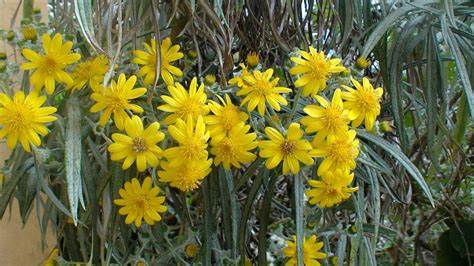

Plantas endemicas
Plantas
Jarilla blanca

Jarilla blanca
Un arbusto ramificado que alcanza hasta 4.5 metros de altura, con flores amarillas dispuestas en panículas. Habita en bosques mixtos o de coníferas por encima de los 2400 metros sobre el nivel del mar, especialmente en el Eje Neovolcánico de México.
Ir al menu